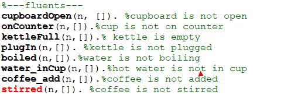
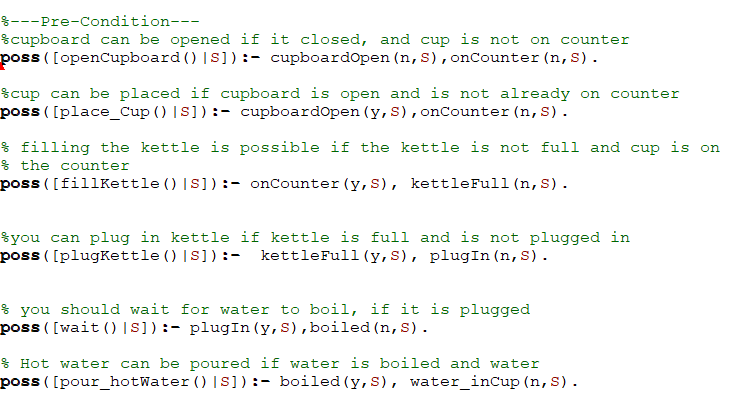
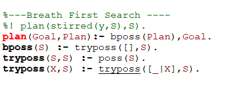

We will be representing the following domain where a robot plans to make a cup of instant coffee. The robot will need to do the following things: • Open a cupboard, take a cup from the cupboard, and place it on the counter • Fill a kettle with water, and plug it in • After the robot waits for the water to boil, it will pour hot water into the cup • Add instant coffee to the cup • With the hot water and coffee in the cup, the robot can stir the coffee to complete the process
-
Step 1 : Create fluents
These are the main states that can be true or flase in our world.
Step 2 : Create Pre-condtions actions
These are action that can possibly the done in our world if specific criterias are met .
Step 3: Create successor state axioms

These are the condiotion under which a state can be changed.
Step 4: Create the breath first search
This would enable prolog to come up with a plan that leads to the goal.